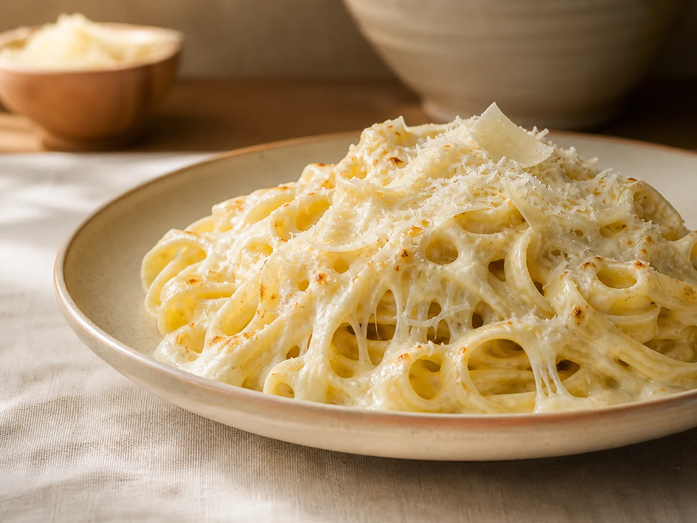
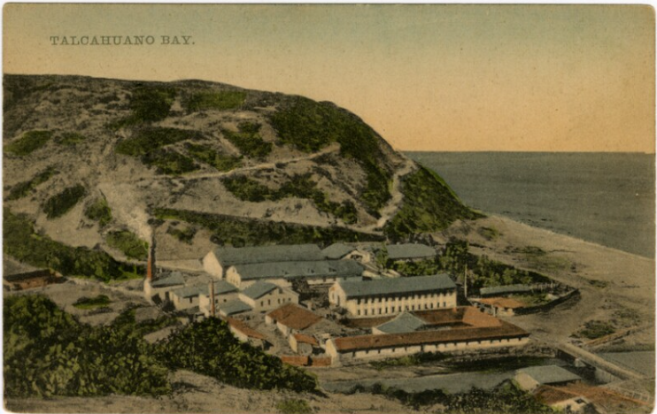

01
$5.990Fettuccine al pesto
Fettuccine artesanal acompañado de pesto y el aroma fresco de la albahaca.
Pastas artesanales en Talcahuano
Sabor casero con historia
Almuerzos preparados con dedicación, ingredientes llenos de sabor y ese cariño que se nota desde el primer bocado.
Preparado artesanalmente

Nuestra cocina
Elige tu favorito y arma tu almuerzo a tu manera.
Fettuccine artesanal acompañado de pesto y el aroma fresco de la albahaca.

Fettuccine artesanal con salsa cremosa y champiñones salteados en rodajas.

Fettuccine artesanal con una salsa suave, cremosa y llena del sabor de la mozzarella.

Fresco, abundante y preparado con ingredientes variados.
Lechuga · Pepino · Arroz · Choclo · Apio · Zanahoria · Morrón · Cebolla morada
El oficio detrás del plato
Cada plato recorre un proceso simple y cuidadoso, desde la masa hasta el toque final.


Momentos de cocina

Fresca y preparada al momento
Una combinación fresca y abundante de lechuga, pepino, arroz, choclo, apio, zanahoria, morrón y cebolla morada.
Preparada al momento y acompañada de la proteína y las mayonesas de la casa que tú elijas.
Pedir bowl por WhatsAppSimple y directo
Fettuccine artesanal o bowl fresco.
Escoge masa, salsa o proteína.
Envía tu comprobante si pagas por transferencia. Al recibirlo confirmamos tu pedido.
Preparación artesanal
Cada pedido requiere aproximadamente 45 minutos de preparación. Elaboramos las pastas frescas para cada solicitud; no se preparan de un día para otro.
Métodos de pago
Si pagas por transferencia, envía el comprobante por WhatsApp. El pedido queda confirmado cuando recibimos el comprobante y validamos disponibilidad y horario.
Para disfrutar más
Reserva el día anterior y paga mediante transferencia para obtener un 5% de descuento.
En tu quinto pedido recibe 50% de descuento en un plato a elección.
Condiciones sujetas a confirmación por WhatsApp.
De nuestra cocina a tu mesa
Coordinamos tus almuerzos con anticipación para que lleguen listos para disfrutar.
Reparto gratisDesde 2 unidades.
$1.000 de repartoPara un solo almuerzo.
45 minutos aprox.Preparación fresca y artesanal.
Cobertura y disponibilidad sujetas a confirmación por WhatsApp.

Raíces de Talcahuano
El nombre se inspira, con respeto, en la antigua mina “El Portón” y en la historia del Cerro David Fuentes, parte de la memoria local de Talcahuano.
También reconoce la huella de David Fuentes Gavilán y su aporte histórico a la ciudad.